| Apple |
|
| The apple tree is a deciduous tree in the rose family best known for its sweet, pomaceous fruit, the apple. It is cultivated worldwide as a fruit tree, and is the most widely grown species in the genus Malus. Apple fruit was the king of all fruits originated in the past 4000 years ago. |
| Book |
||
| A book is a set of written, printed, illustrated, or blank sheets, made of ink, paper, parchment, or other materials, fastened together to hinge at one side. A single sheet within a book is a leaf, and each side of a leaf is a page. A set of text-filled or illustrated pages produced in electronic format is known as an electronic book, or e-book. | ||
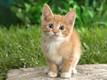 |
Cat |
|
| The domestic cat or the feral cat is a small, typically furry, carnivorous mammal.They are often called house cats when kept as indoor pets or simply cats when there is no need to distinguish them from other felids and felines. | ||
| Dog |
||
| The domestic dog is a domesticated canid which has been selectively bred for millennia for various behaviors, sensory capabilities, and physical attributes. | ||
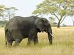 |
Elephant |
|
| Elephants are large mammals of the family Elephantidae and the order Proboscidea. Two species are traditionally recognised, the African elephant and the Asian elephant, although some evidence suggests that African bush elephants and African forest elephants are separate species. Elephants are scattered throughout sub-Saharan Africa, South Asia, and Southeast Asia. | ||
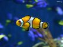 |
Fish |
|
| A fish is any member of a paraphyletic group of organisms that consist of all gill-bearing aquatic craniate animals that lack limbs with digits. | ||
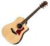 |
Guitar |
|
| The guitar is a popular musical instrument classified as a string instrument with anywhere from 4 to 18 strings, usually having 6. The sound is projected either acoustically or through electrical amplification. | ||
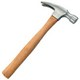 |
Hammer |
|
| A hammer is a tool that delivers a blow (a sudden impact) to an object. Most hammers are hand tools used to drive nails, fit parts, forge metal, and break apart objects. Hammers vary in shape, size, and structure, depending on their purposes. | ||
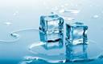 |
Ice |
|
| Ice is water frozen into a solid state. Depending on the presence of impurities such as particles of soil or bubbles of air, it can appear transparent or a more or less opaque bluish-white color. | ||
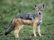 |
Jackal |
|
| The jackal is a small omnivorous mammal of the genus Canis, which also includes the wolf and dog. While the word 'jackal' has historically been used for many small canids, in modern use it most commonly refers to three species: the closely related black-backed jackal and side-striped jackal of sub-Saharan Africa, and the golden jackal of south-central Eurasia. | ||
| Kite |
||
| A kite is traditionally a tethered heavier-than-air craft with wing surfaces that react against the air to create lift and drag. A kite consists of wings, tethers and anchors. Kites have a bridle to guide the face of the kite at the correct angle so the wind can lift it. | ||
| Lion |
||
| The lion is one of the big cats in the genus Panthera and a member of the family Felidae. The commonly used term African lion collectively denotes the several subspecies found in Africa. | ||
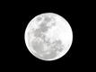 |
Moon |
|
| The Moon is Earth's only natural satellite. It is one of the largest natural satellites in the Solar System, and the largest among planetary satellites relative to the size of the planet that it orbits. | ||
| Nest |
||
| A bird nest is the spot in which a bird lays and incubates its eggs and raises its young. Although the term popularly refers to a specific structure made by the bird itself. | ||
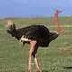 |
Ostrich |
|
| The ostrich or common ostrich is either one or two species of large flightless birds native to Africa, the only living member of the genus Struthio, which is in the ratite family. | ||
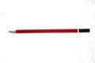 |
Pencil |
|
| A pencil is a writing implement or art medium constructed of a narrow, solid pigment core inside a protective casing which prevents the core from being broken or leaving marks on the user's hand during use. Most pencil cores are made of graphite mixed with a clay binder which leaves grey or black marks that can be easily erased. | ||
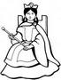 |
Queen |
|
| A woman who rules a country because she has been born into a royal family, or a woman who is married to a king. The female ruler of an independent state, especially one who inherits the position by right of birth. | ||
| Rainbow |
||
| A rainbow is a meteorological phenomenon that is caused by reflection, refraction and dispersion of light in water droplets resulting in a spectrum of light appearing in the sky. It takes the form of a multicoloured arc. Rainbows caused by sunlight always appear in the section of sky directly opposite the sun. | ||
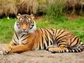 |
Tiger |
|
| The tiger (Panthera tigris) is the largest cat species, most recognisable for their pattern of dark vertical stripes on reddish-orange fur with a lighter underside. The largest tigers have reached a total body length of up to 3.38 m (11.1 ft) over curves and have weighed up to 388.7 kg (857 lb) in the wild. | ||
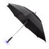 |
Umbrella |
|
| An umbrella or parasol is a folding canopy supported by wooden or metal ribs, which is mounted on a wooden, metal or plastic pole. It is designed to protect a person against rain or sunlight. The word 'umbrella' typically refers to a device used for protection from rain. The word parasol usually refers to an item designed to protect from the sun. | ||
| Volcano |
||
| A volcano is a rupture in the crust of a planetary-mass object, such as Earth, that allows hot lava, volcanic ash, and gases to escape from a magma chamber below the surface. Earth's volcanoes occur because its crust is broken into 17 major, rigid tectonic plates that float on a hotter, softer layer in its mantle. | ||
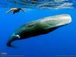 |
Whale |
|
| Whale is the common name for a widely distributed and diverse group of fully aquatic placental marine mammals. They are an informal grouping within the infraorder Cetacea, usually excluding dolphins and porpoises. | ||
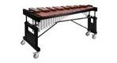 |
Xylophone |
|
| The xylophone is a musical instrument in the percussion family that consists of wooden bars struck by mallets. Each bar is an idiophone tuned to a pitch of a musical scale, whether pentatonic or heptatonic in the case of many African and Asian instruments, diatonic in many western children's instruments, or chromatic for orchestral use. | ||
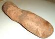 |
Yam |
|
| Yam is the common name for some plant species in the genus Dioscorea that form edible tubers. These are perennial herbaceous vines cultivated for the consumption of their starchy tubers in Africa, Asia, Latin America, the Caribbean and Oceania. | ||
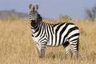 |
Zebra |
|
| Zebras are several species of African equids (horse family) united by their distinctive black and white striped coats. Their stripes come in different patterns, unique to each individual. They are generally social animals that live in small harems to large herds. Unlike their closest relatives the horses and donkeys, zebras have never been truly domesticated. | ||